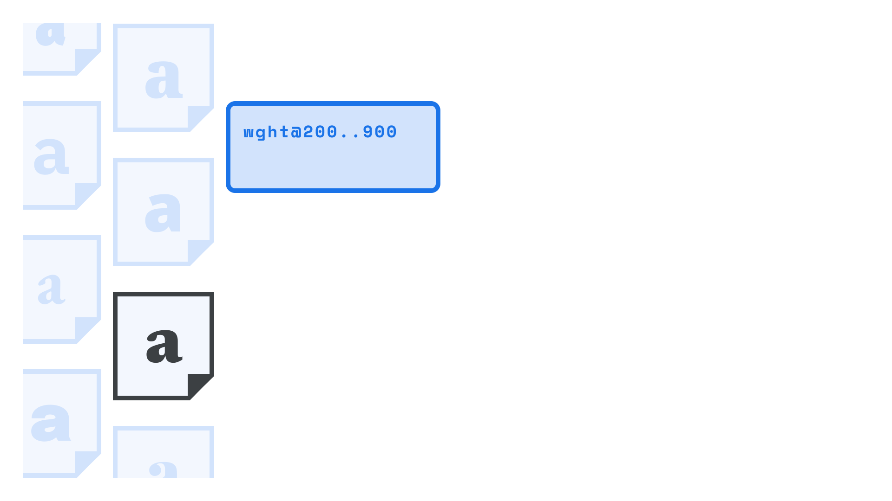

Loading variable fonts on the web
By Elliot Jay Stocks · Google Fonts Knowledge.
Reviewed by Bram Stein, Laurence Penney.
Original article · Source on GitHub · CC BY-SA 4.0. Text, illustrations and existing credits reproduced from the licensed Knowledge repository. Open Shelf adapted the layout and links; these adaptations are also CC BY-SA 4.0. No endorsement implied.
Using a variable font on our website is straightforward, but let’s break down each step in the process so we can see how it differs from using traditional web fonts.
First, we’ll need to choose a variable font, either from a font delivery service such as Google Fonts, or one we’re choosing to self-host.

Loading variable fonts from a font delivery service
If we’re using Google Fonts, we might be used to seeing this embed code for non-variable web fonts:
https://fonts.googleapis.com/css2?family=Oswald:wght@200;700&display=swap
The wght@200;700 part of that code will load the 200 and 700 weights of Oswald. But for variable fonts, we can specify a range of weights by turning that semi-colon into two periods:
https://fonts.googleapis.com/css2?family=Oswald:wght@200..700&display=swap
Easy! Of course, not all designs take advantage of the complete range of styles, but the real value of variable fonts is the ability to expand the range of our design while reducing the amount of font data transferred. In this case, we’d get the entire weight range of 200–700 for the equivalent of two or three individual styles—all in a single download.
It’s also possible to specify just one particular weight value rather than a range. In this example, we load only the weight value of “284”:
https://fonts.googleapis.com/css2?family=Oswald:wght@284&display=swap
The above examples load different weights, but it’s possible to load other variable axes, too. Check out our article “Styling type on the web with variable fonts.”
(By the way, we’re only including code examples for Google Fonts because, at the time of writing, Adobe Fonts doesn’t serve variable fonts for web use.)
Loading variable fonts when self-hosting
As noted on our article on using self-hosted web fonts, we need to set up some basic @font-face rules before we get into any actual typesetting. However, because variable fonts can operate over ranges of values, we need to express those ranges using CSS descriptors:
font-stretch(expressed as percentages), to control width;- a potentially quite different value for
font-stylethan what we’re used to (see the note below); - and a range (rather than a single value) for
font-weightto control weight.
Here’s a template:
@font-face {
font-family: 'FAMILY_NAME';
font-stretch: PERCENTAGE_RANGE_LOW_TO_HIGH; /* Note that font-stretch is a % of normal width */
font-style: NORMAL_OR_ITALIC; /* See note below */
font-weight: NUMERIC_RANGE_LOW_TO_HIGH;
src: url(FONT_FILE_NAME.woff2) format('woff2');
}
A note on the new font-style conventions
Currently, font-style should only be specified for variable fonts in two scenarios:
- If we’re loading a font file that only contains italics (such as when loading upright and italic font files, and grouping them with the same family name).
- If our variable font contains a “slant” axis but not an “italic” one.
If we’re loading an italic-only font file, we need to use font-style: italic;. If we’re loading a font file with a slant axis, we have to specify the low and high degree values, such as font-style: oblique 0deg 10deg;
Due to some inconsistencies with how browsers handle variable font files that contain both italic and upright variants (and also files that contain both italic and slant axes), in these scenarios it’s best to omit the font-style line completely.